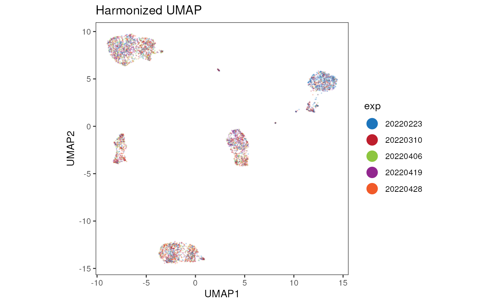

With the cyCONDOR ecosystem we implemented
harmony for batch correction. The correction can be applied
to both the expression values and principal components. In this vignette
we exemplify a workflow to correct for experimental data in the
dataset.
Loading the data
We stat by loading the data.
condor <- prep_fcd(FCSpath = "../../../Figure 3 - Batch Correction/data/CureDem/all/",
ceil = 500,
useCSV = FALSE,
transformation = "a",
remove_param = c("InFile", "Time"),
anno_table = "../../../Figure 3 - Batch Correction/data/CureDem/all.csv",
filename_col = "filename",
seed = 91)## [1] "FSC-A w= 0 t= 236683.234375"
## [1] "FSC-H w= 0 t= 233432.015625"
## [1] "SSC-A w= 0 t= 120710.2578125"
## [1] "SSC-H w= 0 t= 115739.640625"
## [1] "CD45RA w= 0.619815584596749 t= 429350.9375"
## [1] "CD94 w= 1.4860323537846 t= 11631.6865234375"
## [1] "CD195 w= 1.66165589411889 t= 4130.611328125"
## [1] "CD8 w= 1.43133125083526 t= 13017.7783203125"
## [1] "CD38 w= 0.9078314785672 t= 238438.640625"
## [1] "CD127 w= 1.61043943780282 t= 8294.6943359375"
## [1] "CD56 w= 1.43459861851513 t= 35375.5234375"
## [1] "HLA-DR w= 1.14147297180623 t= 135416"
## [1] "CD32 w= 0.959076404951356 t= 136873.734375"
## [1] "CD16 w= 1.43439289304696 t= 41259.5390625"
## [1] "CD19 w= 1.18655091580258 t= 34469.0234375"
## [1] "IgD w= 1.34536191660514 t= 28455.314453125"
## [1] "CD4 w= 1.1425337801458 t= 60363.95703125"
## [1] "CD64 w= 1.48055028211318 t= 38030.31640625"
## [1] "CD14 w= 1.39116882945933 t= 46475.16015625"
## [1] "CD57 w= 0.496463352171743 t= 494907.96875"
## [1] "CD3 w= 1.2896107550081 t= 28773.83203125"
## [1] "PD-1 w= 1.9827542779936 t= 1738.4873046875"
## [1] "CD15 w= 1.05758504700725 t= 70389.734375"
## [1] "CD27 w= 1.17524180346192 t= 44399.75390625"
## [1] "CD20 w= 1.2754614644789 t= 36587.04296875"
## [1] "CD197 w= 1.76107715151015 t= 4197.44140625"
## [1] "CD11c w= 1.2102561120213 t= 12093.9306640625"
## [1] "CD13 w= 1.15588209117963 t= 33960.2578125"
## [1] "CD123 w= 1.05931173666699 t= 76943.0234375"
## [1] "CD25 w= 1.21053626207997 t= 68929.3125"
# Set the data as factor
condor$anno$cell_anno$exp <- as.factor(condor$anno$cell_anno$exp)Dimensionality Reduction
PCA
condor <- runPCA(fcd = condor,
data_slot = "orig",
seed = 91)UMAP
condor <- runUMAP(fcd = condor,
input_type = "pca",
data_slot = "orig",
seed = 91)We can now visualize the batch by plotting the UMAP coordinates coloring the plot by experimental date.
plot_marker(data = cbind(condor$umap$pca_orig, condor$anno$cell_anno),
param = "exp",
order = T,
title = "Original UMAP",
dim_red = "UMAP",
facet_by_variable = FALSE,
color_discrete = c("#1C75BC", "#BE1E2D", "#8DC63F", "#92278F", "#F15A29"))
Batch correction
We can now correct the fluorescence intensities or the principal components. Correction directly on the fluorescence intensities should be performed carefully if you plan to compare the expression in different groups downstream.
Correct Intensities
condor <- harmonize_intensities(fcd = condor,
batch = c("exp"),
seed = 91)## Transposing data matrix## Initializing state using k-means centroids initialization## Harmony 1/10## Harmony 2/10## Harmony 3/10## Harmony converged after 3 iterationsCorrect Principal Components
condor <- harmonize_PCA(fcd = condor,
batch = c("exp"),
data_slot = "orig",
seed = 91)## Transposing data matrix## Initializing state using k-means centroids initialization## Harmony 1/10## Harmony 2/10## Harmony 3/10## Harmony 4/10## Harmony 5/10## Harmony 6/10## Harmony 7/10## Harmony converged after 7 iterationsRepeat dimensionality reduction
With the corrected PC coordinates we can not run again the UMAP function.
condor <- runUMAP(fcd = condor,
input_type = "pca",
data_slot = "norm",
seed = 91)Visualize the results
plot_marker(data = cbind(condor$umap$pca_norm, condor$anno$cell_anno),
param = "exp",
order = T,
title = "Harmonized UMAP",
dim_red = "UMAP",
facet_by_variable = FALSE, color_discrete = c("#1C75BC", "#BE1E2D", "#8DC63F", "#92278F", "#F15A29"))
Session Info
info <- sessionInfo()
info## R version 4.3.1 (2023-06-16)
## Platform: x86_64-pc-linux-gnu (64-bit)
## Running under: Ubuntu 22.04.3 LTS
##
## Matrix products: default
## BLAS: /usr/lib/x86_64-linux-gnu/openblas-pthread/libblas.so.3
## LAPACK: /usr/lib/x86_64-linux-gnu/openblas-pthread/libopenblasp-r0.3.20.so; LAPACK version 3.10.0
##
## locale:
## [1] LC_CTYPE=en_US.UTF-8 LC_NUMERIC=C
## [3] LC_TIME=en_US.UTF-8 LC_COLLATE=en_US.UTF-8
## [5] LC_MONETARY=en_US.UTF-8 LC_MESSAGES=en_US.UTF-8
## [7] LC_PAPER=en_US.UTF-8 LC_NAME=C
## [9] LC_ADDRESS=C LC_TELEPHONE=C
## [11] LC_MEASUREMENT=en_US.UTF-8 LC_IDENTIFICATION=C
##
## time zone: Etc/UTC
## tzcode source: system (glibc)
##
## attached base packages:
## [1] stats graphics grDevices utils datasets methods base
##
## other attached packages:
## [1] cyCONDOR_0.1.5
##
## loaded via a namespace (and not attached):
## [1] fs_1.6.3 destiny_3.14.0
## [3] matrixStats_1.1.0 bitops_1.0-7
## [5] devtools_2.4.5 lubridate_1.9.3
## [7] RColorBrewer_1.1-3 doParallel_1.0.17
## [9] ggsci_3.0.0 Rgraphviz_2.44.0
## [11] profvis_0.3.8 tools_4.3.1
## [13] backports_1.4.1 utf8_1.2.4
## [15] R6_2.5.1 uwot_0.1.16
## [17] urlchecker_1.0.1 withr_2.5.1
## [19] sp_2.1-1 prettyunits_1.2.0
## [21] gridExtra_2.3 cli_3.6.1
## [23] Biobase_2.60.0 textshaping_0.3.7
## [25] ggcyto_1.28.1 labeling_0.4.3
## [27] sass_0.4.7 robustbase_0.99-0
## [29] readr_2.1.4 randomForest_4.7-1.1
## [31] askpass_1.2.0 proxy_0.4-27
## [33] slingshot_2.8.0 pkgdown_2.0.7
## [35] systemfonts_1.0.5 foreign_0.8-85
## [37] harmony_1.1.0 parallelly_1.36.0
## [39] sessioninfo_1.2.2 readxl_1.4.3
## [41] TTR_0.24.3 flowCore_2.12.2
## [43] rstudioapi_0.15.0 generics_0.1.3
## [45] shape_1.4.6 car_3.1-2
## [47] dplyr_1.1.3 Matrix_1.6-1.1
## [49] RProtoBufLib_2.12.1 ggbeeswarm_0.7.2
## [51] fansi_1.0.5 S4Vectors_0.38.2
## [53] abind_1.4-5 lifecycle_1.0.3
## [55] scatterplot3d_0.3-44 yaml_2.3.7
## [57] carData_3.0-5 SummarizedExperiment_1.30.2
## [59] recipes_1.0.8 Rtsne_0.16
## [61] grid_4.3.1 promises_1.2.1
## [63] crayon_1.5.2 miniUI_0.1.1.1
## [65] lattice_0.22-5 cowplot_1.1.1
## [67] pillar_1.9.0 knitr_1.44
## [69] GenomicRanges_1.52.1 boot_1.3-28.1
## [71] future.apply_1.11.0 codetools_0.2-19
## [73] glue_1.6.2 pcaMethods_1.92.0
## [75] data.table_1.14.8 remotes_2.4.2.1
## [77] vcd_1.4-11 png_0.1-8
## [79] vctrs_0.6.4 cellranger_1.1.0
## [81] gtable_0.3.4 cachem_1.0.8
## [83] gower_1.0.1 xfun_0.40
## [85] princurve_2.1.6 S4Arrays_1.0.6
## [87] mime_0.12 prodlim_2023.08.28
## [89] RcppEigen_0.3.3.9.4 survival_3.5-7
## [91] timeDate_4022.108 pheatmap_1.0.12
## [93] SingleCellExperiment_1.22.0 iterators_1.0.14
## [95] CytoDx_1.20.0 cytolib_2.12.1
## [97] hardhat_1.3.0 lava_1.7.3
## [99] ellipsis_0.3.2 ipred_0.9-14
## [101] ncdfFlow_2.46.0 nlme_3.1-163
## [103] usethis_2.2.2 xts_0.13.1
## [105] RcppAnnoy_0.0.21 GenomeInfoDb_1.36.4
## [107] rprojroot_2.0.3 bslib_0.5.1
## [109] irlba_2.3.5.1 vipor_0.4.5
## [111] Rphenograph_0.99.1 rpart_4.1.21
## [113] colorspace_2.1-0 BiocGenerics_0.46.0
## [115] Hmisc_5.1-1 flowWorkspace_4.12.2
## [117] nnet_7.3-19 ggrastr_1.0.2
## [119] tidyselect_1.2.0 smoother_1.1
## [121] processx_3.8.2 compiler_4.3.1
## [123] curl_5.1.0 glmnet_4.1-8
## [125] graph_1.78.0 htmlTable_2.4.2
## [127] desc_1.4.2 DelayedArray_0.26.7
## [129] checkmate_2.3.0 scales_1.2.1
## [131] DEoptimR_1.1-3 lmtest_0.9-40
## [133] hexbin_1.28.3 RBGL_1.76.0
## [135] callr_3.7.3 stringr_1.5.0
## [137] digest_0.6.33 rmarkdown_2.25
## [139] RhpcBLASctl_0.23-42 XVector_0.40.0
## [141] htmltools_0.5.6.1 pkgconfig_2.0.3
## [143] base64enc_0.1-3 umap_0.2.10.0
## [145] sparseMatrixStats_1.12.2 MatrixGenerics_1.12.3
## [147] fastmap_1.1.1 rlang_1.1.1
## [149] Rmisc_1.5.1 htmlwidgets_1.6.2
## [151] ggthemes_4.2.4 shiny_1.7.5.1
## [153] DelayedMatrixStats_1.22.6 farver_2.1.1
## [155] jquerylib_0.1.4 zoo_1.8-12
## [157] jsonlite_1.8.7 ModelMetrics_1.2.2.2
## [159] RCurl_1.98-1.13 magrittr_2.0.3
## [161] Formula_1.2-5 GenomeInfoDbData_1.2.10
## [163] munsell_0.5.0 Rcpp_1.0.11
## [165] TrajectoryUtils_1.8.0 reticulate_1.34.0
## [167] stringi_1.7.12 pROC_1.18.5
## [169] zlibbioc_1.46.0 MASS_7.3-60
## [171] plyr_1.8.9 pkgbuild_1.4.2
## [173] ggrepel_0.9.4 parallel_4.3.1
## [175] listenv_0.9.0 splines_4.3.1
## [177] hms_1.1.3 ps_1.7.5
## [179] igraph_1.5.1 ggpubr_0.6.0
## [181] ranger_0.16.0 ggsignif_0.6.4
## [183] RcppHNSW_0.5.0 reshape2_1.4.4
## [185] stats4_4.3.1 pkgload_1.3.3
## [187] XML_3.99-0.15 evaluate_0.22
## [189] rpart.plot_3.1.1 laeken_0.5.2
## [191] tzdb_0.4.0 foreach_1.5.2
## [193] httpuv_1.6.12 VIM_6.2.2
## [195] openssl_2.1.1 RANN_2.6.1
## [197] tidyr_1.3.0 purrr_1.0.2
## [199] future_1.33.0 ggplot2_3.4.4
## [201] broom_1.0.5 xtable_1.8-4
## [203] e1071_1.7-13 RSpectra_0.16-1
## [205] rstatix_0.7.2 later_1.3.1
## [207] class_7.3-22 ragg_1.2.6
## [209] tibble_3.2.1 beeswarm_0.4.0
## [211] memoise_2.0.1 IRanges_2.34.1
## [213] cluster_2.1.4 ggplot.multistats_1.0.0
## [215] timechange_0.2.0 globals_0.16.2
## [217] CytoML_2.12.0 caret_6.0-94